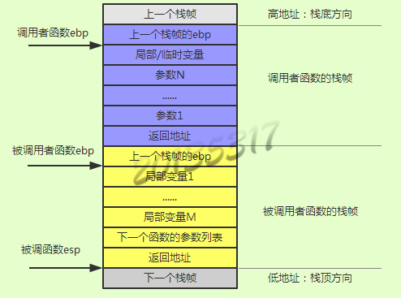
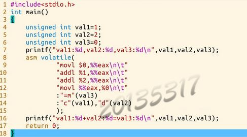

薛兆江 + 原创作品转载请注明出处 + 《Linux内核分析》MOOC课程http://mooc.study.163.com/course/USTC-1000029000
完成一个简单的时间片轮转多道程序内核代码,理解操作系统是如何工作的
| 函数调用约定 | 参数传递顺序 | 负责清理参数占用的堆栈 |
|---|---|---|
| __pascal | 从左到右 | 调用者 |
| __stdcall | 从右到左 | 被调函数 |
| __cdecl | 从右到左 | 调用者 |
linux中gcc默认用的规则是__stdcall.
Windows中C/C++程序的缺省函数调用约定是__cdecl.
调用函数时c语言会利用堆栈来做一个函数调用框架。如下图所示
内嵌汇编语法：__asm__(汇编语句模板: 输出部分: 输入部分: 破坏描述部分)。指令中的操作数可以使用占位符引用C语言变量，名称如下：%0，%1，…，%9。
输入部分描述输入操作数，不同的操作数描述符之间使用逗号格开，每个操作数描述符由限定字符串和C语言表达式或者C语言变量组成。
输出部分描述输出操作数，不同的操作数描述符之间用逗号格开，每个操作数描述符由限定字符串和C语言变量组成。 每个输出操作数的限定字符串必须包含“=”表示他是一个输出操作数。
限制字符有很多种，有些是与特定体系结构相关，它们的作用是指示编译器如何处理其后的C语言变量与指令操作数之间的关系。
| 常用限制字符 | ||
|---|---|---|
| 分类 | 限定符 | 描述 |
| 通用寄存器 | “a” | 将输入变量放入eax | “b” | 将输入变量放入ebx |
| “c” | 将输入变量放入ecx | |
| “d” | 将输入变量放入edx | |
| “s” | 将输入变量放入esi | |
| “d” | 将输入变量放入edi | |
| “q” | 将输入变量放入eax，ebx，ecx，edx中的一个 | |
| “r” | 将输入变量放入通用寄存器，也就是eax，ebx，ecx，edx，esi，edi中的一个 | |
| “A” | 把eax和edx合成一个64 位的寄存器(use long longs) | |
| 内存 | “m” | 内存变量 |
| “o” | 操作数为内存变量，但是其寻址方式是偏移量类型，也即是基址寻址，或者是基址加变址寻址 | |
| “V” | 操作数为内存变量，但寻址方式不是偏移量类型 | |
| “ ” | 操作数为内存变量，但寻址方式为自动增量 | |
| “p” | 操作数是一个合法的内存地址（指针） | |
| 寄存器或内存 | “g” | 将输入变量放入eax，ebx，ecx，edx中的一个或者作为内存变量 |
| “X” | 操作数可以是任何类型 | |
| 立即数 | “I” | 0-31之间的立即数（用于32位移位指令） |
| “J” | 0-63之间的立即数（用于64位移位指令） | |
| “N” | 0-255之间的立即数（用于out指令） | |
| “n” | 立即数 | |
| “p” | 立即数，有些系统不支持除字以外的立即数，这些系统应该使用“n”而不是“i” | |
| 匹配 | & | 该输出操作数不能使用过和输入操作数相同的寄存器 |
| 操作数类型 | “=” | 操作数在指令中是只写的（输出操作数） |
| “+” | 操作数在指令中是读写类型的（输入输出操作数） | |
| 浮点数 | “f” | 浮点寄存器 |
| “t” | 第一个浮点寄存器 | |
| “u” | 第二个浮点寄存器 | |
| “G” | 标准的80387浮点常数 | |
| 其它 | % | 该操作数可以和下一个操作数交换位置 |
| # | 部分注释，从该字符到其后的逗号之间所有字母被忽略 | |
| * | 表示如果选用寄存器，则其后的字母被忽略 | |
C代码中嵌入汇编代码举例
cd LinuxKernel/linux-3.9.4
rm -rf mykernel
patch -p1 < ../mykernel_for_linux3.9.4sc.patch
make allnoconfig
make ＃编译内核请耐心等待
qemu -kernel arch/x86/boot/bzImage
进入实验楼,mykernel文件夹,从github中copy文件，覆盖原来的mymain.c myinterrupt.c 新建mypcb.h。
cd ~/LinuxKernel/linux-3.9.4/
make
cd ~/LinuxKernel/linux-3.9.4/
qemu -kernel arch/x86/boot/bzImage
void __init my_start_kernel(void)
{
int i = 0;
while(1)
{
i++;
if(i%100000 == 0)
printk(KERN_NOTICE "my_start_kernel here %d \n",i);
}
}
void my_timer_handler(void)
{
printk(KERN_NOTICE "\n>>>>>>>>>>>>>>>>>my_timer_handler here<<<<<<<<<<<<<<<<<<\n\n");
}
mymain.c中是一个循环，每次i是100000的倍数时，进行输出。myinterrupt.c中时一个被时钟中断周期调用的函数，进行输出。
/*
* linux/mykernel/mypcb.h
*
* Kernel internal PCB types
*
* Copyright (C) 2013 Mengning
*
*/
#define MAX_TASK_NUM 4
#define KERNEL_STACK_SIZE 1024*8
/* CPU-specific state of this task */
struct Thread {
unsigned long ip;
unsigned long sp;
};
typedef struct PCB{
int pid;
volatile long state; /* -1 unrunnable, 0 runnable, >0 stopped */
char stack[KERNEL_STACK_SIZE];
/* CPU-specific state of this task */
struct Thread thread;
unsigned long task_entry;
struct PCB *next;
}tPCB;
在这个头文件中，定义了最大进程数量为4，栈的大小为8K.
对线程的程序定义了指令指针ip和栈顶指针sp。
定义进程控制块，有进程号pid，进程状态state，进程堆栈，进程执行入口，指向下一个进程控制块的指针。
/*
* linux/mykernel/mymain.c
*
* Kernel internal my_start_kernel
*
* Copyright (C) 2013 Mengning
*
*/
#include < linux/types.h>
#include < linux/string.h>
#include < linux/ctype.h>
#include < linux/tty.h>
#include < linux/vmalloc.h>
#include "mypcb.h"
tPCB task[MAX_TASK_NUM];//进程组4个
tPCB * my_current_task = NULL;
volatile int my_need_sched = 0;//是否需要调度，1表示需要
void my_process(void);
void __init my_start_kernel(void)
{
int pid = 0;
int i;
/* Initialize process 0*/
task[pid].pid = pid;
task[pid].state = 0;/* -1 unrunnable, 0 runnable, >0 stopped */
//设置0号进程的执行入口为函数my_process的起始地址。
task[pid].task_entry = task[pid].thread.ip = (unsigned long)my_process;
//栈顶指针指向堆栈的高地址，函数执行过程中，栈顶指针由高地址向低地址走
task[pid].thread.sp = (unsigned long)&task[pid].stack[KERNEL_STACK_SIZE-1];
//next pid指向0号进程自身，组成一个单向循环链表
task[pid].next = &task[pid];
/*fork more process
*设置1~3号进程，每个进程要做的任务都是my_process()
*/
for(i=1;i< MAX_TASK_NUM;i++)
{
memcpy(&task[i],&task[0],sizeof(tPCB));
task[i].pid = i;
task[i].state = -1;
task[i].thread.sp = (unsigned long)&task[i].stack[KERNEL_STACK_SIZE-1];
//组成单向循环链表，为了时间片轮转
task[i].next = task[i-1].next;
task[i-1].next = &task[i];
}
/* start process 0 by task[0] */
pid = 0;
my_current_task = &task[pid];
//修改栈顶指针esp，指令指针eip，启动0号进程，修改栈底指针ebp
asm volatile(
"movl %1,%%esp\n\t" /* set task[pid].thread.sp to esp */
"pushl %1\n\t" /* push ebp */
"pushl %0\n\t" /* push task[pid].thread.ip */
"ret\n\t" /* pop task[pid].thread.ip to eip */
"popl %%ebp\n\t" //不会执行,但不仅仅为了对称，在这个程序中进程是无限循环，不会返回执行这个pop,但真实的程序会返回执行这句
:
: "c" (task[pid].thread.ip),"d" (task[pid].thread.sp) /* input c or d mean %ecx/%edx*/
);
}
void my_process(void)
{
int i = 0;
while(1)
{
i++;
if(i%10000000 == 0)
{
printk(KERN_NOTICE "this is process %d -\n",my_current_task->pid);
if(my_need_sched == 1)//如果需要调度
{
my_need_sched = 0;
my_schedule();//进行调度
}
printk(KERN_NOTICE "this is process %d +\n",my_current_task->pid);
}
}
}
/*
* linux/mykernel/myinterrupt.c
*
* Kernel internal my_timer_handler
*
* Copyright (C) 2013 Mengning
*
*/
#include < linux/types.h>
#include < linux/string.h>
#include < linux/ctype.h>
#include < linux/tty.h>
#include < linux/vmalloc.h>
#include "mypcb.h"
extern tPCB task[MAX_TASK_NUM];
extern tPCB * my_current_task;
extern volatile int my_need_sched;
volatile int time_count = 0;
/*
* Called by timer interrupt.
* it runs in the name of current running process,
* so it use kernel stack of current running process
*/
void my_timer_handler(void)
{
#if 1
//time_count每自增1000，进行调度，时间片
if(time_count%1000 == 0 && my_need_sched != 1)
{
printk(KERN_NOTICE ">>>my_timer_handler here<<<\n");
my_need_sched = 1;
}
time_count ++ ;
#endif
return;
}
void my_schedule(void)
{
tPCB * next;//下个进程
tPCB * prev;//当前进程
if(my_current_task == NULL
|| my_current_task->next == NULL)
{
return;
}
printk(KERN_NOTICE ">>>my_schedule<<<\n");
/* schedule */
next = my_current_task->next;//轮转
prev = my_current_task;
if(next->state == 0)/* -1 unrunnable, 0 runnable, >0 stopped */
{
my_current_task = next;
printk(KERN_NOTICE ">>>switch %d to %d<<<\n",prev->pid,next->pid);
/* switch to next process */
asm volatile(
"pushl %%ebp\n\t" /* save ebp */
"movl %%esp,%0\n\t" /* save esp */
"movl %2,%%esp\n\t" /* restore esp */ //恢复
"movl $1f,%1\n\t" /* save eip */ //67行语句地址
"pushl %3\n\t"
"ret\n\t" /* restore eip */ //调到popl
"1:\t" /* next process start here */
"popl %%ebp\n\t"
: "=m" (prev->thread.sp),"=m" (prev->thread.ip)
: "m" (next->thread.sp),"m" (next->thread.ip)
);
}
else//next->state != 0 进程未运行过
{
next->state = 0;
my_current_task = next;
printk(KERN_NOTICE ">>>switch %d to %d<<<\n",prev->pid,next->pid);
/* switch to new process */
asm volatile(
"pushl %%ebp\n\t" /* save ebp */
"movl %%esp,%0\n\t" /* save esp */
"movl %2,%%esp\n\t" /* restore esp */
"movl %2,%%ebp\n\t" /* restore ebp */
"movl $1f,%1\n\t" /* save eip */ //也是第67行的地址
"pushl %3\n\t"
"ret\n\t" /* restore eip */
: "=m" (prev->thread.sp),"=m" (prev->thread.ip)
: "m" (next->thread.sp),"m" (next->thread.ip)
);
}
return;
}
代码有点多，总结一下，执行过程。my_time_handler()函数，是个时间片轮转，周期性地发出中断信号，也就是my_need_sched。my_start_kernel()完成每个进程初始化，每个进程的任务都是my_process(),由于这个函数中有个无限循环，任务永远不会结束；并且启动了0号进程。任务需要调度时根据任务链表顺序进行调度。
来看my_process()函数，先不看my_schedule()函数，并且假设只有两个进程0号和1号，便于分析。my_process()执行过程就是，0号进程启动，执行到77行my_schedule()，被调度到了1号进程，1号进程从65行也就是1号进程的起始开始执行，执行到77行，又调度回0号进程，0号进程从78行继续执行，执行到81行，回到68行继续下一次循环，又执行到77行进行调度，1号进程从第78行恢复执行.......
下面来看my_schedule()函数，依然假设进程从0号切换到1号再切到0号。0号进程启动后，在my_process()的第77行中进入my_schedule(),执行到my_schedule()的第55行判断一下，由于1号进程没有运行过，next-state!=0,跳到73行，接着运行到80行，保存0号进程的ebp到栈中,81行和84行是保存0号进程的sp,ip;82,83,85行是启动1号进程。1号进程从my_process()函数的起始开始执行，又进入my_schedule()函数，执行到my_schedule()的第55行判断一下，由于0号进程运行过，next-state==0,继续执行，第61行保存1号进程的ebp到栈中,62行和64行是保存1号进程的sp,ip;63行、65行和66行是恢复0号进程。由于之前0号进程保存的ip指向的是67行，所以这次0号进程从my_schedule的第67行恢复执行，由于63行恢复了0号进程的esp,所有68行正确恢复0号进程的ebp,0号进程执行my_schedule()的第91行，回到my_process()的第79行，又运行到68行开始新的循环，又从77行进入my_schedule(),这次执行到my_schedule()的第55行，判断条件满足，继续执行第57行，又开始保存0号进程，以及恢复1号进程从67行继续执行.......